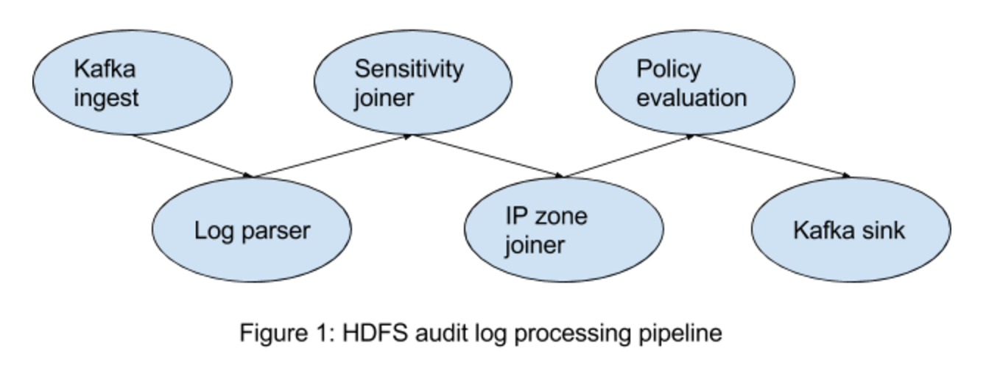
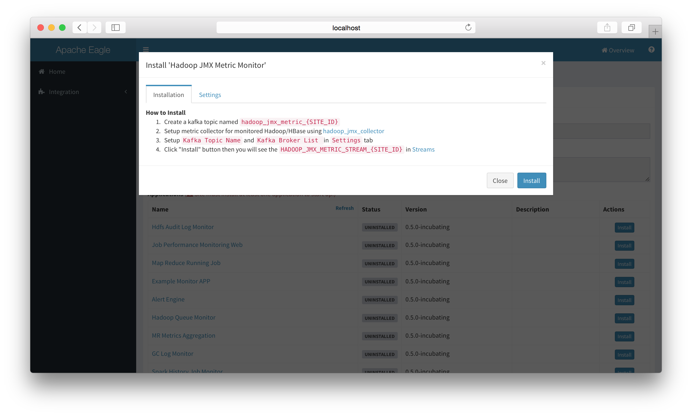
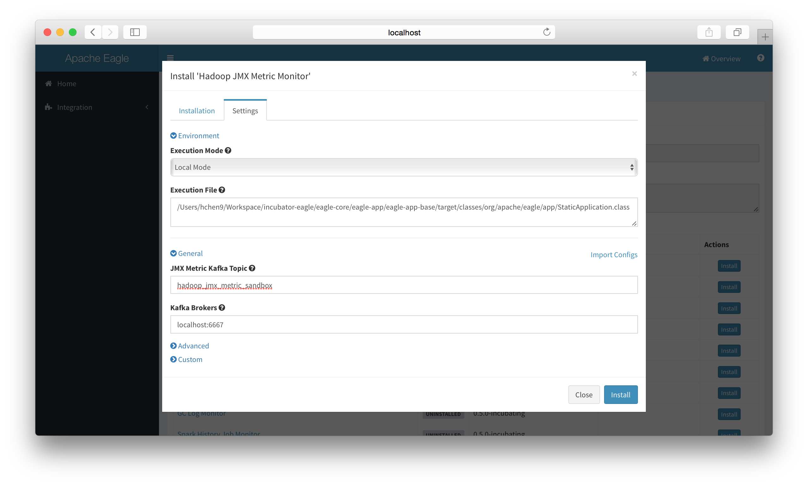
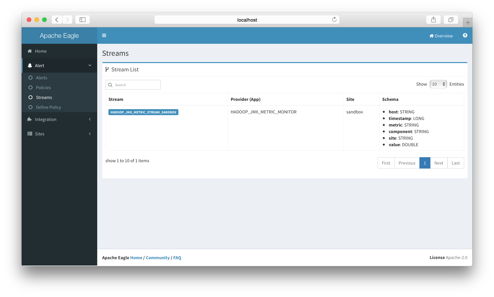
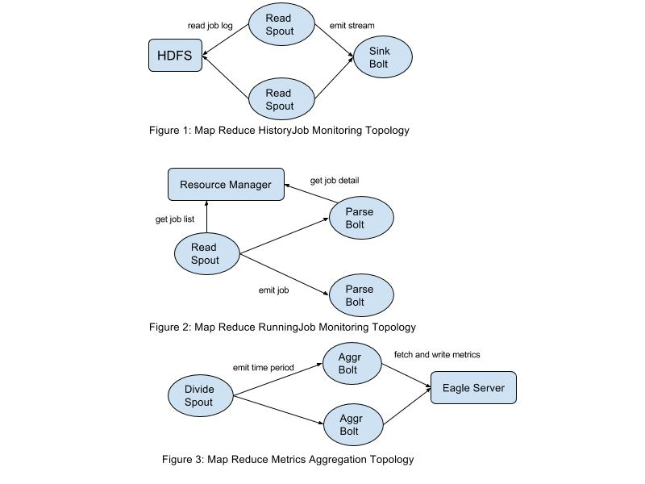

HDFS Data Activity Monitoring
Monitor Requirements
This application aims to monitor user activities on HDFS via the hdfs audit log. If any abnormal user activity is detected, an alert is sent in several seconds.
Processing Pipeline
The whole pipeline of this application is
-
Kafka ingest: this application consumes data from Kafka. In other words, users have to stream the log into Kafka first.
-
Data re-procesing, which includes raw log parser, ip zone joiner, sensitivity information joiner.
-
Kafka sink: parsed data will flows into Kafka again, which will be consumed by the alert engine.
-
Policy evaluation: the alert engine evaluates each data event to check if the data violate the user defined policy. An alert is generated if the data matches the policy.

How to collect the log
To collect the raw audit log on namenode servers, a log collector is needed. Users can choose any tools they like. There are some common solutions available: logstash, filebeat, log4j appender, etcs.
For detailed instruction, refer to: How to stream audit log into Kafka
Sample policies
1. monitor file/folder operations
Delete a file/folder on HDFS.
from HDFS_AUDIT_LOG_ENRICHED_STREAM_SANDBOX[str:contains(src,'/tmp/test/subtest') and ((cmd=='rename' and str:contains(dst, '.Trash')) or cmd=='delete')] select * group by user insert into hdfs_audit_log_enriched_stream_out
HDFS_AUDIT_LOG_ENRICHED_STREAM_SANDBOX is the input stream name, and hdfs_audit_log_enriched_stream_out is the output stream name, the content between [] is the monitoring conditions. cmd, src and dst is the fields of hdfs audit logs.
2. classify the file/folder on HDFS
Users may want to mark some folders/files on HDFS as sensitive content. For example, by marking '/sys/soj' as "SOJ", users can monitor any operations they care about on 'sys/soj' and its subfolders/files.
from HDFS_AUDIT_LOG_ENRICHED_STREAM_SANDBOX[sensitivityType=='SOJ' and cmd=='delete')] select * group by user insert into hdfs_audit_log_enriched_stream_out
The example policy monitors the 'delete' operation on files/subfolders under /sys/soj.
3. Classify the IP Zone
In some cases, the ips are classified into different zones. For some zone, it may have higher secrecy. Eagle providers ways to monitor user activities on IP level.
from HDFS_AUDIT_LOG_ENRICHED_STREAM_SANDBOX[securityZone=='SECURITY' and cmd=='delete')] select * group by user insert into hdfs_audit_log_enriched_stream_out
The example policy monitors the 'delete' operation on hosts in 'SECURITY' zone.
Questions on this application
JMX Monitoring
Introduction
Application "HADOOP_JMX_METRIC_MONITOR" provide embedded collector script to ingest hadoop/hbase jmx metric as eagle stream and provide ability to define alert policy and detect anomaly in real-time from metric.
| Sample | |
|---|---|
| Type | HADOOP_JMX_METRIC_MONITOR |
| Version | 0.5.0-version |
| Description | Collect JMX Metric and monitor in real-time |
| Streams | HADOOP_JMX_METRIC_STREAM |
| Configuration | JMX Metric Kafka Topic (default: hadoop_jmx_metric_{SITE_ID}) Kafka Broker List (default: localhost:6667) |
Setup & Installation
-
Make sure already setup a site (here use a demo site named "sandbox").
-
Install "Hadoop JMX Monitor" app in eagle server.

-
Configure Application settings.

-
Ensure a kafka topic named hadoop_jmx_metric_{SITE_ID} (In current guide, it should be hadoop_jmx_metric_sandbox)
-
Setup metric collector for monitored Hadoop/HBase using hadoop_jmx_collector and modify the configuration.
-
Collector scripts: hadoop_jmx_collector
-
Rename config-sample.json to config.json: config-sample.json
{ env: { site: "sandbox", name_node: { hosts: [ "sandbox.hortonworks.com" ], port: 50070, https: false }, resource_manager: { hosts: [ "sandbox.hortonworks.com" ], port: 50030, https: false } }, inputs: [{ component: "namenode", host: "server.eagle.apache.org", port: "50070", https: false, kafka_topic: "nn_jmx_metric_sandbox" }, { component: "resourcemanager", host: "server.eagle.apache.org", port: "8088", https: false, kafka_topic: "rm_jmx_metric_sandbox" }, { component: "datanode", host: "server.eagle.apache.org", port: "50075", https: false, kafka_topic: "dn_jmx_metric_sandbox" }], filter: { monitoring.group.selected: [ "hadoop", "java.lang" ] }, output: { kafka: { brokerList: [ "localhost:9092" ] } } }
-
-
Click "Install" button then you will see the HADOOP_JMX_METRIC_STREAM_{SITE_ID} in Streams.

Define JMX Alert Policy
-
Go to "Define Policy".
-
Select HADOOP_JMX_METRIC_MONITOR related streams.
-
Define SQL-Like policy, for example
from HADOOP_JMX_METRIC_STREAM_SANDBOX[metric=="cpu.usage" and value > 0.9] select site,host,component,value insert into HADOOP_CPU_USAGE_GT_90_ALERT;As seen in below screenshot:

Stream Schema
-
Schema
Stream Name Stream Schema Time Series HADOOP_JMX_METRIC_MONITOR host: STRING
timestamp: LONG
metric: STRING
component: STRING
site: STRING
value: DOUBLETrue
Metrics List
- Please refer to the Hadoop JMX Metrics List and see which metrics you're interested in.
Job Performance Monitoring
Monitor Requirements
- Finished/Running Job Details
- Job Metrics(Job Counter/Statistics) Aggregation
- Alerts(Job failure/Job slow)
Applications
-
Application Table
application responsibility Map Reduce History Job Monitoring parse mr history job logs from hdfs Map Reduce Running Job Monitoring get mr running job details from resource manager Map Reduce Metrics Aggregation aggregate metrics generated by applications above
Data Ingestion And Process
-
We build storm topology to fulfill requirements for each application.

-
Map Reduce History Job Monitoring (Figure 1)
- Read Spout
- read/parse history job logs from HDFS and flush to eagle service(storage is Hbase)
- Sink Bolt
- convert parsed jobs to streams and write to data sink
- Read Spout
- Map Reduce Running Job Monitoring (Figure 2)
- Read Spout
- fetch running job list from resource manager and emit to Parse Bolt
- Parse Bolt
- for each running job, fetch job detail/job counter/job configure/tasks from resource manager
- Read Spout
- Map Reduce Metrics Aggregation (Figure 3)
- Divide Spout
- divide time period(need to be aggregated) to small pieces and emit to Aggregate Bolt
- Aggregate Bolt
- aggregate metrics for given time period received from Divide Spout
- Divide Spout
Integration With Alert Engine
In order to integrate applications with alert engine, follow below steps:
- define stream
- define stream in resource/META-INF/providers/xxxProviders.xml
- configure data sink
- currently, create kafka topic
- emit stream data
- currently, write to kafka topic
- define policy
- define policy in web ui and enable it, eagle server will schedule it
- view alerts
- view in alerts page
Currently, Map Reduce History Job Monitoring has been integrated with alert engine. For example, if you want to receive map reduce job failure alerts, you can define policies (SiddhiQL) as the following:
from map_reduce_failed_job_stream[site=="sandbox" and currentState=="FAILED"]
select site, queue, user, jobType, jobId, submissionTime, trackingUrl, startTime, endTime
group by jobId insert into map_reduce_failed_job_stream_out
All columns above are predefined in stream map_reduce_failed_job_stream defined in
eagle-jpm/eagle-jpm-mr-history/src/main/resources/META-INF/providers/org.apache.eagle.jpm.mr.history.MRHistoryJobApplicationProvider.xml
Then, enable the policy in web ui after it's created. Eagle will schedule it automatically.
FAQ
Placeholder for topic: FAQ